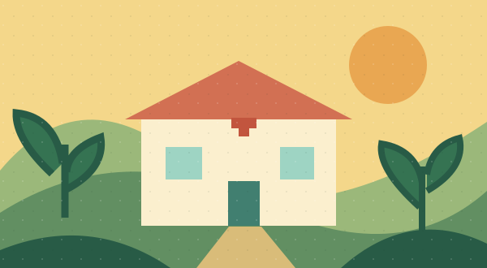

Índice de Desarrollo Humano
Desarrollo humano medio
CAPÍTULO 01 / TIKAL · SEMANA 01
Introducción al desarrollo humano
Índice de Desarrollo Humano, comparación entre países y datos de Guatemala.
Explorar la revistaIntroducción al desarrollo humano
01 / INTRODUCCIÓN
Hablar de desarrollo humano es preguntarse si las personas tienen una oportunidad real de vivir la vida que valoran. Esta idea, impulsada por el Programa de las Naciones Unidas para el Desarrollo (PNUD) desde 1990, cambió la costumbre de medir el progreso de un país solo por su economía. Un país puede producir mucho y aun así dejar a buena parte de su gente sin salud, sin escuela o sin oportunidades.
Para hacer visible esa diferencia, el PNUD calcula el Índice de Desarrollo Humano (IDH), un número entre 0 y 1 que resume tres dimensiones: una vida larga y saludable, el acceso al conocimiento y un nivel de vida digno. Mientras más cerca de 1, mayor es el desarrollo humano. Los países se agrupan en cuatro categorías: bajo, medio, alto y muy alto.
En el Informe sobre Desarrollo Humano 2025, que recoge datos de 2023, Guatemala obtuvo un IDH de 0.662, el puesto 137 entre 193 países y la categoría de desarrollo humano medio. Detrás de ese número hay datos concretos: una esperanza de vida de 72.6 años y un promedio de escolaridad de apenas 5.8 años, menos que la primaria completa. En los últimos años, además, el índice ha avanzado poco.
Los promedios también esconden desigualdades. Según estimaciones del Global Data Lab para 2023, la región Metropolitana alcanza un IDH de 0.759, mientras que el Noroccidente, que incluye Huehuetenango y Quiché, llega a 0.587. Nacer en un lugar u otro de Guatemala puede determinar el acceso a salud, educación e ingresos.
En esta revista exploramos esa realidad con una mirada crítica y ética: comparamos a Guatemala con otros países de la región, revisamos cómo ha cambiado su IDH en la última década y escuchamos voces de personas reales. El objetivo no es juzgar con cifras, sino entender qué significan en la vida cotidiana y qué podemos hacer para ampliar las oportunidades de todas y todos (PNUD, 2025; Global Data Lab, 2025).
GUATEMALA EN CIFRAS
Desarrollo humano medio
Entre 193 países
Una vida larga y saludable
Acceso al conocimiento
10.7 años esperados de escolaridad
US$ 12,459 de ingreso nacional bruto per cápita, en paridad de poder adquisitivo
Fuente: PNUD (2025), Informe sobre Desarrollo Humano 2025. Ver referencias ↗
02 / COMPONENTES DEL IDH
El Índice de Desarrollo Humano resume tres dimensiones básicas en un valor entre 0 y 1.

Una vida larga y saludable.
Esperanza de vida al nacer.
Acceso al conocimiento.
Años promedio y años esperados de escolaridad.
Recursos para vivir con dignidad.
Ingreso nacional bruto per cápita.
Ilustraciones vectoriales originales: salud, educación y nivel de vida.
Tres dimensiones y cuatro indicadores.
El resultado es un índice entre 0 y 1.
Fuente: PNUD (2025). Un número entre 0 y 1; cuanto más cerca de 1, mayor desarrollo humano.
03 / COMPARACIÓN INTERNACIONAL
| País | IDH | Puesto / 193 | Categoría |
|---|---|---|---|
| México | 0.789 | 77 | Alto |
| Bolivia | 0.733 | 108 | Alto |
| Guatemala | 0.662 | 137 | Medio |
| Honduras | Por confirmar | Por confirmar | Medio* |
Fuente: PNUD (2025). *Honduras: valor, puesto y categoría pendientes de comprobar en la Tabla 1 del informe.
04 / EVOLUCIÓN DEL IDH
Figura 1 · Índice de Desarrollo Humano
La serie pasa de 0.64 en 2015 a 0.662 en 2023; presenta una caída en 2021 y recuperación en 2022 y 2023.
| Año | IDH aproximado |
|---|
Fuente indicada: PNUD (2025). Los valores están redondeados y pendientes de sustituir por la serie exacta de la Tabla 2. Se muestran nueve observaciones anuales; falta incorporar un año para cubrir diez años. El eje vertical muestra el intervalo 0.63–0.67.
La línea muestra estancamiento: una década casi plana, con una caída en 2021 por los efectos de la pandemia y una recuperación en 2022 y 2023.
Interpretación del documento original; la atribución a la pandemia requiere contrastarse con la fuente.
IDH SUBNACIONAL
Comparación regional con datos de 2023.
Fuente indicada: Global Data Lab (2025), datos de 2023. Promedio nacional: PNUD (2025). Se conservan los datos aportados; falta verificar la denominación de la región Noroeste o Noroccidente y la comparabilidad entre fuentes.
05 / TESTIMONIOS
Experiencia sobre las oportunidades educativas.
Experiencia sobre el acceso a servicios médicos.
Experiencia sobre el trabajo y los gastos del hogar.
Estos relatos son ejemplos simulados. Serán reemplazados por entrevistas reales realizadas con consentimiento.
06 / FOTOGRAFÍAS
07 / REFLEXIÓN PERSONAL
Piensa en salud, educación y las diferencias entre regiones.
Tu reflexión por completar
Tu reflexión por completar
1. Espacio por completar
2. Espacio por completar
3. Espacio por completar
08 / REFERENCIAS
Referencias aportadas en el documento original. Pendientes de cotejar con las publicaciones consultadas y completar sus datos bibliográficos.
Por completar: referencias de fotografías, testimonios y otras fuentes que se incorporen.
Promovemos una comprensión crítica y ética de la realidad guatemalteca: información clara y verificable, accesibilidad, equidad y no discriminación, diversidad cultural, inclusión de distintas voces y respeto a la privacidad.